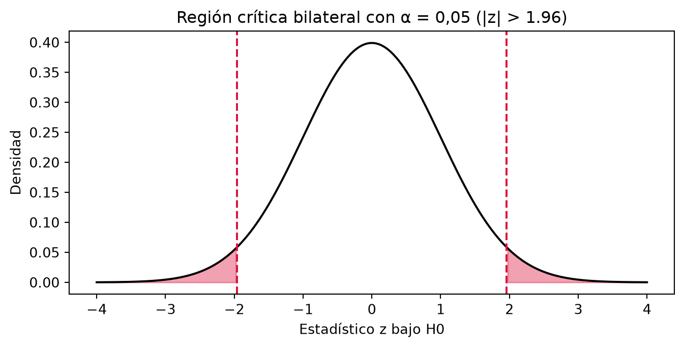
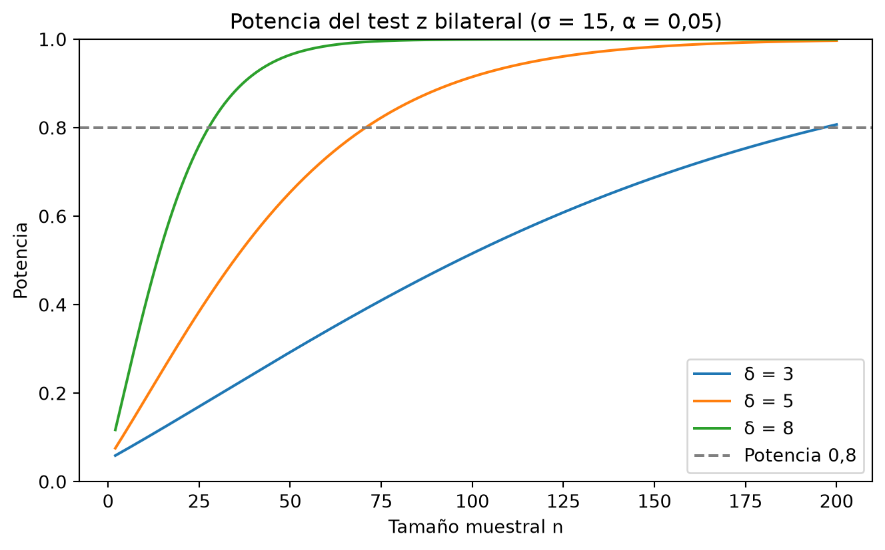
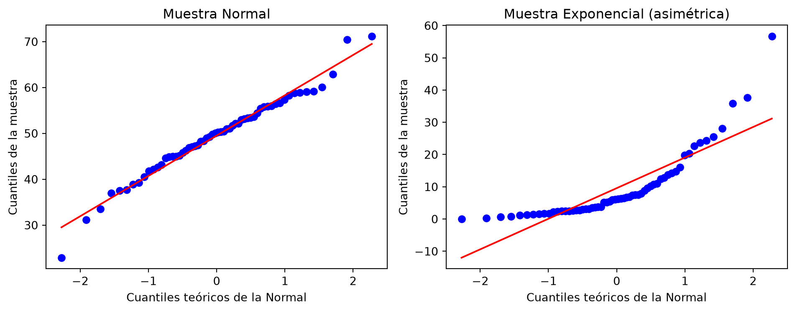
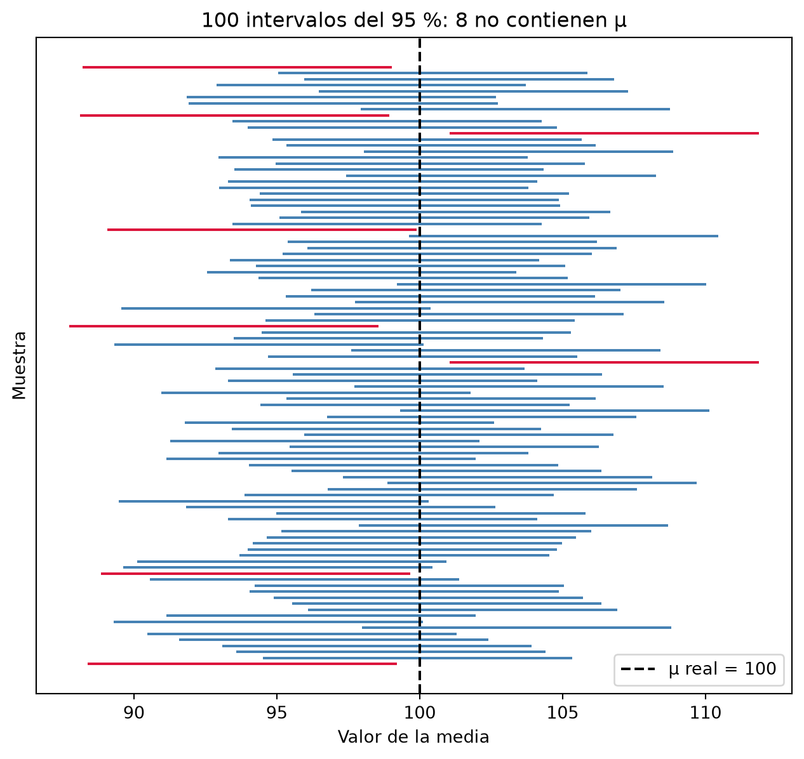
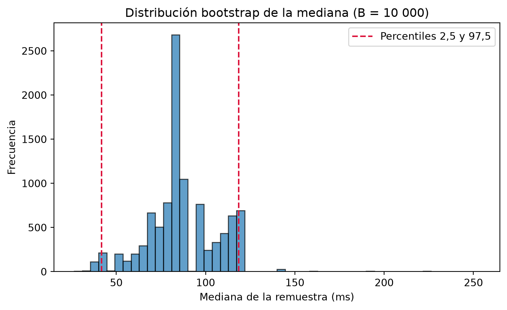

flowchart LR
A["Población<br/>parámetro desconocido"] --> B["Muestra aleatoria"]
B --> C["Estadístico muestral<br/>x̄, p̂, s"]
C --> D["Estimación<br/>intervalo de confianza"]
C --> E["Contraste<br/>estadístico y valor p"]
D --> F["Interpretación con incertidumbre"]
E --> F
9 Inferencia Estadística
NotaObjetivos del módulo
- Distinguir parámetro, estimador y error estándar.
- Construir e interpretar intervalos de confianza para medias y proporciones.
- Plantear contrastes de hipótesis bilaterales y unilaterales, e interpretar correctamente el p-valor.
- Elegir la prueba adecuada para una o dos muestras, independientes o emparejadas.
- Calcular la potencia de un contraste y el tamaño muestral necesario.
- Construir e interpretar intervalos de confianza bootstrap.
- Distinguir significación estadística, relevancia práctica y causalidad.
9.1 Introducción a la inferencia estadística
La inferencia estadística utiliza una muestra para obtener conclusiones sobre una población cuyo comportamiento completo no podemos observar. Como la muestra es solo una parte de la población, las conclusiones incorporan incertidumbre y dependen del diseño del muestreo, la calidad de las mediciones y los supuestos del método utilizado.
Distinguiremos dos objetivos complementarios:
- Estimación: aproximar un parámetro poblacional, por ejemplo la media \(\mu\) o la proporción \(p\), mediante una estimación puntual o un intervalo de confianza.
- Contraste de hipótesis: evaluar si los datos ofrecen evidencia suficiente contra una afirmación concreta acerca de uno o varios parámetros.
Una muestra grande no garantiza por sí sola una inferencia válida: también importa cómo se seleccionó. Una muestra sesgada puede producir estimaciones precisas de una población equivocada. Siempre que sea posible, se requiere un muestreo adecuado, independencia entre observaciones y una definición clara de la población objetivo.
9.2 Estimación puntual y error estándar
Un estimador puntual es un estadístico que se utiliza para estimar un parámetro poblacional. Por ejemplo, la media muestral \(\bar{X}\) estima la media poblacional \(\mu\), y la proporción muestral \(\hat{p}\) estima la proporción poblacional \(p\).
La variabilidad de un estimador entre muestras se expresa mediante su error estándar. Para la media muestral:
\[ SE(\bar{X}) = \frac{\sigma}{\sqrt{n}} \]
cuando la desviación típica poblacional \(\sigma\) es conocida. Si no se conoce, se estima mediante la desviación típica muestral \(s\):
\[ \widehat{SE}(\bar{X}) = \frac{s}{\sqrt{n}}. \]
El error estándar disminuye al aumentar \(n\), aunque la mejora sigue una relación proporcional a \(1/\sqrt{n}\): cuadruplicar el tamaño muestral reduce el error estándar aproximadamente a la mitad. El error estándar no debe confundirse con la desviación típica de los datos, que describe la dispersión individual.
9.3 Intervalos de confianza
Un intervalo de confianza del nivel \(1-\alpha\) se obtiene mediante un procedimiento que, bajo sus supuestos, contiene el verdadero parámetro en una proporción \(1-\alpha\) de las muestras repetidas. Para un intervalo del 95 %, \(\alpha=0{,}05\).
La interpretación frecuentista se refiere al procedimiento, no a una probabilidad posterior de que el parámetro fijo esté dentro del intervalo ya calculado. Una vez observado el intervalo, el parámetro poblacional no se considera aleatorio en este marco.
9.3.1 Media con desviación típica poblacional conocida
Si la población es normal, o el tamaño muestral permite una aproximación adecuada para la media, y se conoce \(\sigma\), el intervalo es:
\[ \bar{x} \pm z_{1-\alpha/2}\frac{\sigma}{\sqrt{n}}, \]
donde \(z_{1-\alpha/2}\) es el cuantil de la normal estándar. Para un intervalo bilateral del 95 %, el valor crítico es aproximadamente \(1{,}96\).
Código
from stats_toolkit import inference as inf
# Ejemplo ilustrativo: tiempo medio de respuesta de una API.
lower, upper = inf.confidence_interval_mean_z(
sample_mean=122.5, sigma=15, n=40, confidence=0.95
)
print(f"IC 95 % para μ: ({lower:.2f}, {upper:.2f}) ms")IC 95 % para μ: (117.85, 127.15) ms9.3.2 Media con desviación típica poblacional desconocida
En la práctica, \(\sigma\) suele ser desconocida y se sustituye por \(s\). Si las observaciones son independientes y la población es normal (o la aproximación es razonable), se utiliza la distribución \(t\) de Student con \(n-1\) grados de libertad:
\[ \bar{x} \pm t_{1-\alpha/2,\,n-1}\frac{s}{\sqrt{n}}. \]
La distribución \(t\) tiene colas más pesadas que la normal estándar, especialmente con pocos grados de libertad, y por ello refleja la incertidumbre adicional asociada a estimar la desviación típica. A medida que \(n\) aumenta, se aproxima a la normal.
Código
# Ejemplo ilustrativo: salario mensual en una muestra de 25 empleados.
lower, upper = inf.confidence_interval_mean_t(
sample_mean=2450, sample_std=310, n=25, confidence=0.95
)
print(f"IC 95 % para μ: ({lower:.2f}, {upper:.2f}) €")IC 95 % para μ: (2322.04, 2577.96) €9.3.3 Proporción poblacional
Para una proporción muestral \(\hat{p}=x/n\), una aproximación normal habitual es:
\[ \hat{p} \pm z_{1-\alpha/2}\sqrt{\frac{\hat{p}(1-\hat{p})}{n}}. \]
Esta aproximación puede ser deficiente en muestras pequeñas o cuando la proporción está cerca de 0 o 1. En esas situaciones conviene considerar intervalos como Wilson o métodos exactos, en vez de confiar automáticamente en el intervalo normal.
Código
# Ejemplo ilustrativo: 15 conversiones entre 50 clientes.
lower, upper = inf.confidence_interval_proportion(
p_hat=15/50, n=50, confidence=0.95
)
print(f"IC aproximado del 95 %: ({lower:.3f}, {upper:.3f})")IC aproximado del 95 %: (0.173, 0.427)El intervalo de Wilson corrige estos problemas: calcula la incertidumbre con cada valor posible de \(p\), en lugar de con \(\hat{p}\), y nunca se sale de \([0, 1]\). Con 15 éxitos de 50 los dos intervalos se parecen; con 0 éxitos de 20, el de Wald se reduce a un punto, como si no hubiera incertidumbre, mientras que el de Wilson sigue siendo informativo:
Código
print("15 de 50 -> Wilson:", tuple(round(v, 3) for v in inf.confidence_interval_proportion_wilson(15, 50)))
print("0 de 20 -> Wald: ", inf.confidence_interval_proportion(p_hat=0, n=20))
print("0 de 20 -> Wilson:", tuple(round(v, 3) for v in inf.confidence_interval_proportion_wilson(0, 20)))15 de 50 -> Wilson: (0.191, 0.438)
0 de 20 -> Wald: (0.0, np.float64(0.0))
0 de 20 -> Wilson: (0.0, 0.161)9.4 Contrastes de hipótesis: conceptos esenciales
Un contraste compara dos afirmaciones sobre la población:
- Hipótesis nula (\(H_0\)): afirmación de referencia, habitualmente de igualdad o ausencia de diferencia.
- Hipótesis alternativa (\(H_1\) o \(H_a\)): afirmación compatible con la pregunta de investigación.
Por ejemplo, para evaluar si una media difiere de un valor de referencia \(\mu_0\):
\[ H_0: \mu=\mu_0, \qquad H_1: \mu\ne\mu_0. \]
La igualdad se incluye en la hipótesis nula. La alternativa debe establecerse antes de examinar los resultados; elegirla después de observar los datos altera las propiedades del contraste.
9.4.1 Contrastes bilaterales y unilaterales
La forma de \(H_1\) determina dónde se encuentra la evidencia relevante:
| Tipo | Hipótesis alternativa | Interpretación |
|---|---|---|
| Bilateral | \(H_1: \theta\ne\theta_0\) | Se buscan diferencias en ambos sentidos. |
| Unilateral derecha | \(H_1: \theta>\theta_0\) | Se busca evidencia de un valor mayor. |
| Unilateral izquierda | \(H_1: \theta<\theta_0\) | Se busca evidencia de un valor menor. |
No debe elegirse un contraste unilateral solo porque el resultado observado tenga la dirección esperada. La dirección debe justificarse por la pregunta científica antes del análisis.
9.4.2 Estadístico de contraste, región crítica y valor p
El estadístico de contraste resume la discrepancia entre los datos y lo que cabría esperar si \(H_0\) fuera cierta. Para la media con desviación poblacional conocida:
\[ z=\frac{\bar{x}-\mu_0}{\sigma/\sqrt{n}}. \]
Cuando \(\sigma\) es desconocida, se usa el estadístico:
\[ t=\frac{\bar{x}-\mu_0}{s/\sqrt{n}}, \qquad df=n-1. \]
El nivel de significación \(\alpha\) se fija antes de analizar los datos. En un contraste bilateral, la región crítica para \(z\) es \(|z|>z_{1-\alpha/2}\); en uno unilateral izquierdo es \(z<z_{\alpha}\). La decisión equivalente basada en el valor p es rechazar \(H_0\) cuando \(p\text{-valor}\leq\alpha\).
Código
import numpy as np
import matplotlib.pyplot as plt
from scipy import stats
alpha = 0.05
z_crit = stats.norm.ppf(1 - alpha / 2)
xs = np.linspace(-4, 4, 400)
plt.figure(figsize=(8, 3.5))
plt.plot(xs, stats.norm.pdf(xs), color="black")
for cola in (xs <= -z_crit, xs >= z_crit):
plt.fill_between(xs[cola], stats.norm.pdf(xs[cola]), color="crimson", alpha=0.4)
plt.axvline(-z_crit, color="crimson", linestyle="--")
plt.axvline(z_crit, color="crimson", linestyle="--")
plt.title(f"Región crítica bilateral con α = 0,05 (|z| > {z_crit:.2f})")
plt.xlabel("Estadístico z bajo H0")
plt.ylabel("Densidad")
plt.show()
El valor p es la probabilidad, suponiendo cierta \(H_0\) y los supuestos del modelo, de obtener un estadístico tan extremo o más que el observado en la dirección o direcciones establecidas por \(H_1\). No es la probabilidad de que \(H_0\) sea cierta, ni mide por sí solo el tamaño o la importancia práctica del efecto.
NotaUn p-valor muy pequeño no es cero
Un p-valor puede ser minúsculo (por ejemplo, \(10^{-20}\)) sin ser cero: si \(H_0\) fuera cierta, obtener un resultado tan extremo sería rarísimo, pero no imposible. Cuando un programa muestra 0.000000, suele deberse al formato (solo se imprimen seis decimales) o, en casos extremos, a que el número es demasiado pequeño para que el ordenador pueda representarlo. Por eso, al comunicar un resultado con un p-valor inferior a 0,001 se escribe \(p < 0{,}001\), y no \(p = 0\). Y un p-valor minúsculo tampoco significa que la probabilidad de que \(H_0\) sea cierta sea minúscula: el p-valor se calcula suponiendo que \(H_0\) es cierta.
Si \(p>\alpha\), la conclusión correcta es no rechazar \(H_0\): no se ha obtenido evidencia suficiente contra ella. Esto no demuestra que \(H_0\) sea verdadera ni que las dos condiciones sean equivalentes.
9.4.3 Procedimiento recomendado
- Formular la pregunta y definir la población y el parámetro de interés.
- Especificar \(H_0\) y \(H_1\) antes de examinar el resultado.
- Fijar \(\alpha\) y decidir si el contraste es bilateral o unilateral.
- Seleccionar la prueba adecuada según el diseño, el tipo de variable y los supuestos.
- Revisar calidad de datos, independencia, valores ausentes y supuestos relevantes.
- Calcular el estadístico, los grados de libertad y el valor p; obtener un intervalo de confianza cuando proceda.
- Informar del resultado en el contexto del problema, incluyendo tamaño del efecto e incertidumbre cuando sea posible.
9.4.4 Errores de tipo I y II y potencia
| Decisión | \(H_0\) cierta | \(H_0\) falsa |
|---|---|---|
| Rechazar \(H_0\) | Error de tipo I, probabilidad \(\alpha\) | Decisión correcta; potencia \(1-\beta\) |
| No rechazar \(H_0\) | Decisión correcta | Error de tipo II, probabilidad \(\beta\) |
- Error de tipo I: rechazar una hipótesis nula que en realidad es cierta.
- Error de tipo II: no rechazar una hipótesis nula falsa.
- Potencia (\(1-\beta\)): probabilidad de rechazar \(H_0\) cuando existe el efecto especificado por la alternativa.
La potencia depende, entre otros factores, del tamaño del efecto, la variabilidad, el tamaño muestral y el nivel \(\alpha\). Un resultado no significativo puede reflejar ausencia de efecto, pero también falta de precisión o potencia.
9.4.5 Cálculo de la potencia y del tamaño muestral
La potencia se calcula antes de recoger los datos, al diseñar el estudio, para decidir cuántas observaciones hacen falta. Veamos el caso más sencillo: el test z para una media con \(\sigma\) conocida. Si la media real no es \(\mu_0\), sino \(\mu_1 = \mu_0 + \delta\), el estadístico \(Z\) ya no sigue una \(\mathcal{N}(0, 1)\), sino una Normal desplazada \(\delta\sqrt{n}/\sigma\) unidades. La potencia es la probabilidad de que, aun así, caiga en la región crítica. Para el contraste unilateral derecho:
\[ 1 - \beta = P\left(Z > z_{1-\alpha} - \frac{\delta\sqrt{n}}{\sigma}\right), \qquad Z \sim \mathcal{N}(0, 1). \]
En el bilateral se usa \(z_{1-\alpha/2}\) y se suman las dos colas. La potencia aumenta con el tamaño del efecto \(\delta\), con \(n\) y con \(\alpha\), y disminuye con la variabilidad \(\sigma\). Despejando \(n\) se obtiene el tamaño muestral necesario para detectar una diferencia \(\delta\) con potencia \(1-\beta\):
\[ n = \left(\frac{(z_{1-\alpha/2} + z_{1-\beta})\,\sigma}{\delta}\right)^2, \]
redondeado hacia arriba (con \(z_{1-\alpha}\) en lugar de \(z_{1-\alpha/2}\) si el contraste es unilateral). En el caso bilateral la fórmula ignora la cola opuesta, que solo añade potencia, así que con ese \(n\) la potencia es al menos la pedida.
Código
# Tiempo de respuesta de una API: σ = 15 ms. ¿Detectaríamos una diferencia de 5 ms?
print(f"Potencia con n = 36: {inf.power_z_test_mean(effect=5, sigma=15, n=36):.3f}")
n = inf.sample_size_z_test_mean(effect=5, sigma=15, alpha=0.05, power=0.80)
print(f"n necesario para una potencia del 80 %: {n}")
print(f"Potencia con n = {n}: {inf.power_z_test_mean(effect=5, sigma=15, n=n):.3f}")Potencia con n = 36: 0.516
n necesario para una potencia del 80 %: 71
Potencia con n = 71: 0.802Con 36 observaciones, una diferencia real de 5 ms solo se detectaría en algo más de la mitad de los estudios: un resultado no significativo sería poco informativo. El gráfico muestra cómo crece la potencia con \(n\) para varios tamaños del efecto.
Código
ns = np.arange(2, 201)
plt.figure(figsize=(8, 4.5))
for delta in (3, 5, 8):
plt.plot(ns, [inf.power_z_test_mean(delta, 15, k) for k in ns], label=f"δ = {delta}")
plt.axhline(0.8, color="gray", linestyle="--", label="Potencia 0,8")
plt.title("Potencia del test z bilateral (σ = 15, α = 0,05)")
plt.xlabel("Tamaño muestral n")
plt.ylabel("Potencia")
plt.ylim(0, 1)
plt.legend()
plt.show()
Si \(\sigma\) es desconocida, se usa el test t, cuya potencia se calcula con la distribución t no central; statsmodels lo hace directamente. El tamaño del efecto se expresa entonces en unidades de desviación típica, \(d = \delta/\sigma\), y el \(n\) resultante es algo mayor que el del test z:
Código
from statsmodels.stats.power import TTestPower
n_t = TTestPower().solve_power(effect_size=5 / 15, alpha=0.05, power=0.80)
print(f"Test t de una muestra: n = {n_t:.1f} -> {int(np.ceil(n_t))} observaciones")Test t de una muestra: n = 72.6 -> 73 observacionesEl mismo razonamiento sirve para fijar el tamaño muestral de un intervalo de confianza: para estimar una media con un margen de error \(E\) hace falta \(n = (z_{1-\alpha/2}\,\sigma/E)^2\), y para una proporción, \(n = z_{1-\alpha/2}^2\,p(1-p)/E^2\). Si no se conoce \(p\), tomar \(p = 0{,}5\) da el tamaño más conservador. Reducir el margen a la mitad exige cuadruplicar \(n\).
Código
print("Media, margen ±2 ms (σ = 15):", inf.sample_size_mean_ci(margin=2, sigma=15))
print("Proporción, margen ±3 puntos:", inf.sample_size_proportion_ci(margin=0.03))
print("Proporción, margen ±1,5 puntos:", inf.sample_size_proportion_ci(margin=0.015))Media, margen ±2 ms (σ = 15): 217
Proporción, margen ±3 puntos: 1068
Proporción, margen ±1,5 puntos: 4269Estas fórmulas suponen muestreo aleatorio simple y observaciones independientes. Un error frecuente es calcular la potencia después del estudio usando el efecto observado («potencia observada»): no añade información al p-valor. Para valorar un resultado no significativo es más útil el intervalo de confianza, que muestra qué tamaños del efecto siguen siendo compatibles con los datos.
9.4.5.1 Explora: potencia y tamaño muestral
Mueve los controles para ver cómo cambia la potencia del test z bilateral. El punto rojo marca el tamaño muestral elegido.
AdvertenciaGráfico interactivo
Este gráfico se genera en el navegador y necesita JavaScript y conexión a internet para cargar sus bibliotecas. Si este aviso no desaparece en unos segundos, no se han podido cargar: el resto del capítulo no depende del gráfico, y los mismos cálculos aparecen en el texto y en el código de la sección.
9.5 Contrastes de una muestra
9.5.1 Media con desviación típica desconocida: prueba t
La prueba t de una muestra contrasta \(H_0:\mu=\mu_0\) usando:
\[ t=\frac{\bar{x}-\mu_0}{s/\sqrt{n}},\qquad df=n-1. \]
La prueba presupone observaciones independientes y, para muestras pequeñas, una distribución aproximadamente normal de la variable. En muestras grandes, la inferencia sobre la media puede ser robusta frente a desviaciones moderadas de normalidad, pero los valores atípicos graves, la dependencia o una distribución muy asimétrica requieren atención.
Código
salarios_muestra = [2340, 2510, 2280, 2600, 2455, 2390, 2470, 2530, 2410, 2380]
t_stat, p_value = inf.t_test_mean(sample=salarios_muestra, mu0=2400)
print(f"t = {t_stat:.3f}, p-valor = {p_value:.4f}")t = 1.208, p-valor = 0.25799.5.2 Proporción de una muestra
Para contrastar \(H_0:p=p_0\), una aproximación normal usa:
\[ z=\frac{\hat{p}-p_0}{\sqrt{p_0(1-p_0)/n}}. \]
Debe comprobarse que la aproximación sea razonable. Para muestras pequeñas, conteos escasos o probabilidades próximas a los extremos, se consideran pruebas binomiales exactas u otros métodos apropiados.
Código
# Ejemplo ilustrativo: 62 de 100 clientes prefieren la nueva versión. ¿Difiere de 0,5?
z_stat, p_value = inf.one_proportion_z_test(successes=62, n=100, p0=0.5)
print(f"z = {z_stat:.3f}, p-valor = {p_value:.3g}")z = 2.400, p-valor = 0.01649.5.3 Varianza de una población
Si la población es normal, puede contrastarse \(H_0:\sigma^2=\sigma_0^2\) mediante:
\[ \chi^2=\frac{(n-1)s^2}{\sigma_0^2},\qquad df=n-1. \]
Este contraste es sensible a desviaciones de la normalidad; no debe aplicarse mecánicamente a datos muy asimétricos o con valores atípicos.
Código
# ¿La desviación típica de los salarios de la muestra anterior difiere de 100 €?
chi2_stat, p_value = inf.chi2_test_variance(salarios_muestra, sigma0_sq=100**2)
print(f"χ² = {chi2_stat:.3f}, p-valor = {p_value:.3g}")χ² = 8.220, p-valor = 0.9769.6 Comparación de dos muestras
Antes de escoger una prueba hay que determinar si las muestras son independientes o emparejadas. Las mediciones antes y después en las mismas personas, por ejemplo, son emparejadas; dos grupos de participantes distintos suelen ser independientes.
9.6.1 Dos medias independientes: t de Welch
Cuando no se desea asumir igualdad de varianzas, la prueba de Welch utiliza:
\[ t=\frac{\bar{x}_1-\bar{x}_2}{\sqrt{s_1^2/n_1+s_2^2/n_2}}. \]
Los grados de libertad se aproximan mediante la fórmula de Welch–Satterthwaite. Es una opción general recomendable para comparar medias independientes, incluso cuando las varianzas son similares.
La prueba t agrupada tradicional presupone varianzas poblacionales iguales y estima una varianza común. No es necesario decidir automáticamente entre ambas mediante una prueba preliminar de igualdad de varianzas: esa estrategia puede alterar las propiedades del análisis. La elección debe atender al diseño y a los supuestos, y Welch suele ser una opción robusta.
Código
# Ejemplo ilustrativo: tiempo de carga (s) de dos versiones de una web
version_a = [5.1, 4.8, 6.2, 5.9, 5.5, 6.8, 4.9, 5.7]
version_b = [6.0, 6.9, 7.4, 5.8, 7.1, 6.6, 7.9, 6.2, 7.0, 6.4, 8.1]
t_stat, p_value, df = inf.welch_t_test(version_a, version_b)
print(f"t = {t_stat:.3f}, g.l. de Welch = {df:.1f}, p-valor = {p_value:.3g}")t = -3.756, g.l. de Welch = 16.0, p-valor = 0.001739.6.2 Datos emparejados
Para cada pareja se calcula una diferencia \(D_i=X_i-Y_i\) y se contrasta la media de esas diferencias:
\[ t=\frac{\bar{D}-\mu_{D,0}}{s_D/\sqrt{n}},\qquad df=n-1. \]
La unidad de análisis es la diferencia dentro de cada pareja. No se deben tratar las mediciones emparejadas como dos muestras independientes.
Código
# Ejemplo ilustrativo: presión sistólica de 8 personas antes y después de un programa de ejercicio
antes = [142, 150, 138, 160, 155, 147, 152, 149]
despues = [138, 145, 139, 151, 150, 140, 149, 147]
t_stat, p_value = inf.paired_t_test(antes, despues)
print(f"t = {t_stat:.3f}, p-valor = {p_value:.3g}")t = 3.930, p-valor = 0.005689.6.3 Dos proporciones independientes
Para contrastar igualdad de proporciones, bajo \(H_0:p_1=p_2\) se utiliza a menudo la proporción agrupada:
\[ \hat{p}=\frac{x_1+x_2}{n_1+n_2}, \]
\[ z=\frac{\hat{p}_1-\hat{p}_2}{\sqrt{\hat{p}(1-\hat{p})(1/n_1+1/n_2)}}. \]
Esta aproximación requiere tamaños y conteos adecuados. En tablas pequeñas pueden ser preferibles métodos exactos. Si las proporciones provienen de observaciones emparejadas, debe usarse una prueba para datos pareados, no una prueba de dos proporciones independientes.
Código
# Ejemplo ilustrativo (A/B testing): 30 conversiones de 100 frente a 45 de 110
z_stat, p_value = inf.two_proportion_z_test(30, 100, 45, 110)
print(f"z = {z_stat:.3f}, p-valor = {p_value:.3g}")z = -1.648, p-valor = 0.09949.7 Normalidad y elección de métodos no paramétricos
La normalidad relevante depende de la prueba: para la prueba t de una muestra se considera la distribución de la variable; para la t emparejada, la distribución de las diferencias; y para la comparación de medias independientes, las distribuciones dentro de cada grupo. El teorema central del límite justifica ciertas aproximaciones de la media muestral bajo condiciones, pero no corrige el sesgo de muestreo ni la dependencia entre observaciones.
La normalidad puede examinarse con histogramas, gráficos Q–Q y, como complemento, pruebas como Shapiro–Wilk. Una prueba de normalidad no debe ser el único criterio: con muestras grandes puede detectar desviaciones triviales y con muestras pequeñas puede no detectar desviaciones importantes.
En un gráfico Q–Q se comparan los cuantiles de la muestra con los que tendría una Normal: si los datos son aproximadamente normales, los puntos quedan cerca de la recta; las curvaturas sistemáticas indican asimetría o colas distintas de las de la Normal.
Código
rng = np.random.default_rng(1)
fig, axes = plt.subplots(1, 2, figsize=(10, 4))
for ax, (titulo, datos) in zip(axes, [("Muestra Normal", rng.normal(50, 10, 60)),
("Muestra Exponencial (asimétrica)", rng.exponential(10, 60))]):
stats.probplot(datos, dist="norm", plot=ax)
ax.set_title(titulo)
ax.set_xlabel("Cuantiles teóricos de la Normal")
ax.set_ylabel("Cuantiles de la muestra")
plt.tight_layout()
plt.show()
Cuando los supuestos paramétricos no son adecuados, se pueden considerar métodos no paramétricos: la prueba de signos y la de Wilcoxon de rangos con signo (una muestra o datos emparejados), Mann–Whitney U (dos grupos independientes) y Kruskal–Wallis (tres o más grupos). Se desarrollan en el Módulo 6, junto con sus hipótesis y supuestos.
Las pruebas no paramétricas no son automáticamente válidas ante cualquier problema: también tienen supuestos, y la selección debe corresponder al diseño y a la pregunta.
9.8 Variables categóricas: chi-cuadrado y Fisher
Para estudiar la asociación entre dos variables categóricas se organiza una tabla de contingencia y se comparan sus frecuencias observadas con las que cabría esperar si las variables fueran independientes. Es la prueba chi-cuadrado de independencia, que se desarrolla en el Módulo 6 junto con la prueba exacta de Fisher, la corrección de Yates y la \(V\) de Cramér como medida del tamaño del efecto. La práctica de este módulo ya la aplica a los datos de sueño. Como cualquier contraste, detecta asociación, pero no identifica qué categorías la producen ni demuestra causalidad.
9.9 Significación estadística y relevancia práctica
Un valor p pequeño no implica necesariamente un efecto importante: con muestras muy grandes, diferencias pequeñas pueden resultar estadísticamente significativas. Del mismo modo, un valor p superior a \(\alpha\) no prueba la ausencia de efecto. Por ello, junto al valor p deben presentarse, cuando sea posible:
- la estimación del efecto (diferencia de medias, diferencia de proporciones, razón de riesgos u otra medida apropiada);
- un intervalo de confianza;
- el tamaño de muestra y los supuestos relevantes;
- la relevancia clínica, científica o práctica en el contexto del problema.
La interpretación también debe distinguir asociación de causalidad. Un estudio observacional puede identificar asociaciones, pero por sí solo no demuestra que una variable cause otra.
9.10 Simulación: cobertura de intervalos de confianza
Podemos ilustrar la interpretación de un intervalo del 95 % simulando muestras de una población con media conocida y contando cuántos intervalos contienen el valor real. La proporción observada variará de una simulación a otra, pero debería aproximarse al nivel nominal si se cumplen los supuestos y se simulan suficientes repeticiones.
Código
coverage = inf.simulate_ci_coverage(
true_mu=100, sigma=15, n=30, confidence=0.95,
n_simulations=5000, seed=42
)
print(f"Proporción de intervalos que contienen la verdadera μ: {coverage:.3f}")Proporción de intervalos que contienen la verdadera μ: 0.947El gráfico muestra 100 de esos intervalos. Cada línea es el intervalo de una muestra distinta; los que no contienen el valor real aparecen en rojo. El parámetro está fijo: lo que varía de una muestra a otra es el intervalo.
Código
rng = np.random.default_rng(7)
mu, sigma, n = 100, 15, 30
plt.figure(figsize=(8, 7))
fallos = 0
for i in range(100):
media = rng.normal(mu, sigma, n).mean()
low, up = inf.confidence_interval_mean_z(media, sigma, n, 0.95)
contiene = low <= mu <= up
fallos += not contiene
plt.plot([low, up], [i, i], color="steelblue" if contiene else "crimson", linewidth=1.5)
plt.axvline(mu, color="black", linestyle="--", label="μ real = 100")
plt.title(f"100 intervalos del 95 %: {fallos} no contienen μ")
plt.xlabel("Valor de la media")
plt.ylabel("Muestra")
plt.yticks([])
plt.legend(loc="lower right")
plt.show()
9.11 Intervalos bootstrap
Los intervalos anteriores se apoyan en una fórmula para el error estándar y en una distribución conocida (Normal o t). Para otros estadísticos, como la mediana, un percentil o un cociente, esa fórmula es complicada o no existe, y con muestras pequeñas de poblaciones muy asimétricas la aproximación Normal puede ser dudosa. El bootstrap aproxima la distribución muestral del estadístico usando solo la muestra observada:
- Se extrae de la muestra, con reemplazamiento, una remuestra del mismo tamaño \(n\) (algunos valores aparecen repetidos y otros no aparecen).
- Se calcula el estadístico en la remuestra.
- Se repite muchas veces (por ejemplo, \(B = 10\,000\)).
- El intervalo percentil del 95 % está formado por los percentiles 2,5 y 97,5 de los \(B\) valores obtenidos.
La idea es que la muestra hace el papel de la población: la variación del estadístico de una remuestra a otra imita su variación de una muestra a otra. Por ejemplo, para la mediana de unos tiempos de respuesta muy asimétricos:
Código
rng = np.random.default_rng(12)
tiempos = rng.exponential(scale=120, size=40) # tiempos simulados (ms), asimétricos
boot = inf.bootstrap_distribution(tiempos, np.median, n_resamples=10_000, seed=1)
low, high = inf.bootstrap_ci(tiempos, np.median, confidence=0.95, n_resamples=10_000, seed=1)
print(f"Mediana muestral: {np.median(tiempos):.1f} ms")
print(f"IC bootstrap del 95 % para la mediana: ({low:.1f}, {high:.1f}) ms")Mediana muestral: 83.7 ms
IC bootstrap del 95 % para la mediana: (41.7, 118.6) msCódigo
plt.figure(figsize=(8, 4.5))
plt.hist(boot, bins=50, edgecolor="black", alpha=0.7)
for v in (low, high):
plt.axvline(v, color="crimson", linestyle="--")
plt.axvline(np.nan, color="crimson", linestyle="--", label="Percentiles 2,5 y 97,5")
plt.title("Distribución bootstrap de la mediana (B = 10 000)")
plt.xlabel("Mediana de la remuestra (ms)")
plt.ylabel("Frecuencia")
plt.legend()
plt.show()
scipy.stats.bootstrap implementa el mismo método y variantes más precisas, como el intervalo BCa (corregido por sesgo y asimetría), que es su opción por defecto. Como las remuestras son aleatorias, sus resultados pueden diferir ligeramente de los nuestros; en este ejemplo coinciden, porque la mediana de una remuestra solo puede tomar unos pocos valores de la muestra:
Código
from scipy import stats
for metodo in ("percentile", "BCa"):
ic = stats.bootstrap((tiempos,), np.median, method=metodo, n_resamples=10_000, rng=1).confidence_interval
print(f"scipy ({metodo}): ({ic.low:.1f}, {ic.high:.1f}) ms")scipy (percentile): (41.7, 118.6) ms
scipy (BCa): (41.7, 118.6) msEl bootstrap no crea información nueva ni elimina los supuestos: exige que la muestra sea representativa y que las observaciones sean independientes. Con muestras pequeñas el intervalo percentil suele ser demasiado estrecho (su cobertura real queda por debajo de la nominal), y no funciona bien con estadísticos que dependen de valores extremos, como el máximo.
TipIdeas clave
- Un intervalo de confianza del 95 % procede de un método que acierta en el 95 % de las muestras; no es la probabilidad de que el parámetro esté en un intervalo concreto.
- El p-valor mide la compatibilidad de los datos con \(H_0\); no es la probabilidad de que \(H_0\) sea cierta. No rechazar \(H_0\) no demuestra que sea verdadera.
- La prueba depende del diseño: una o dos muestras, independientes o emparejadas, medias o proporciones.
- Los supuestos (independencia, normalidad, tamaño de la muestra) deben revisarse antes de interpretar el resultado.
- La significación estadística no implica importancia práctica ni causalidad: informa también del efecto y su intervalo.
- La potencia y el tamaño muestral se fijan al diseñar el estudio; reducir el margen de error a la mitad exige cuadruplicar \(n\).
- El bootstrap aproxima la distribución de un estadístico remuestreando los datos; no sustituye a una muestra representativa.
9.12 Autoevaluación
Intenta responder cada pregunta antes de desplegar la respuesta.
1. Un intervalo de confianza del 95 % para \(\mu\) es \((4{,}2;\ 5{,}8)\). ¿Es correcto decir que hay un 95 % de probabilidad de que \(\mu\) esté entre 4,2 y 5,8?
TipRespuesta
No. En el enfoque frecuentista \(\mu\) es fija: está o no está en ese intervalo. El 95 % describe el procedimiento: si repitiéramos el muestreo muchas veces, alrededor del 95 % de los intervalos construidos contendrían a \(\mu\).
2. Un contraste da \(p = 0{,}03\) con \(\alpha = 0{,}05\). ¿Qué se concluye? ¿Hay un 3 % de probabilidad de que \(H_0\) sea cierta?
TipRespuesta
Se rechaza \(H_0\) al 5 %. Pero el p-valor no es la probabilidad de que \(H_0\) sea cierta: es la probabilidad de obtener un resultado al menos tan extremo como el observado si \(H_0\) fuera cierta.
3. Un estudio con 15 personas no encuentra diferencias significativas (\(p = 0{,}40\)). ¿Demuestra que no hay efecto?
TipRespuesta
No. Con una muestra tan pequeña la potencia puede ser baja: un efecto real podría pasar inadvertido. Conviene mirar el intervalo de confianza del efecto: si es muy ancho, los datos son compatibles tanto con ausencia de efecto como con efectos importantes.
4. Para estimar una proporción con un margen de error de ±3 puntos hacen falta unas 1068 personas. ¿Cuántas necesitarías para un margen de ±1,5 puntos?
TipRespuesta
Unas cuatro veces más, alrededor de 4270: el margen es proporcional a \(1/\sqrt{n}\), así que reducirlo a la mitad exige cuadruplicar \(n\).
5. Mides la presión arterial de 20 personas antes y después de un programa de ejercicio. ¿Qué prueba usarías para comparar las medias?
TipRespuesta
Una t para datos emparejados, aplicada a las 20 diferencias (o la prueba de Wilcoxon si las diferencias son claramente no normales). No una t de Welch para muestras independientes: las dos medidas proceden de las mismas personas y no son independientes.
9.13 Cierre
En este módulo conectamos las distribuciones estudiadas anteriormente con la estimación de parámetros y la evaluación de hipótesis. La elección de una prueba debe partir de la pregunta científica, el diseño y el tipo de variable; la conclusión debe basarse en el valor p, la incertidumbre y el tamaño del efecto, sin convertir la significación estadística en una afirmación causal automática.
Continúa con la actividad práctica, que aplica estos contrastes a cuatro preguntas sobre los datos de sueño.
9.13.1 Material complementario
Parte de los conceptos de este módulo se ha ampliado a partir del material docente Contrastes de hipótesis, de Ester Bernadó Mansilla (FUOC, 2020). Se han integrado sus contenidos estadísticos relevantes y se han adaptado las explicaciones al nivel y la estructura del curso.